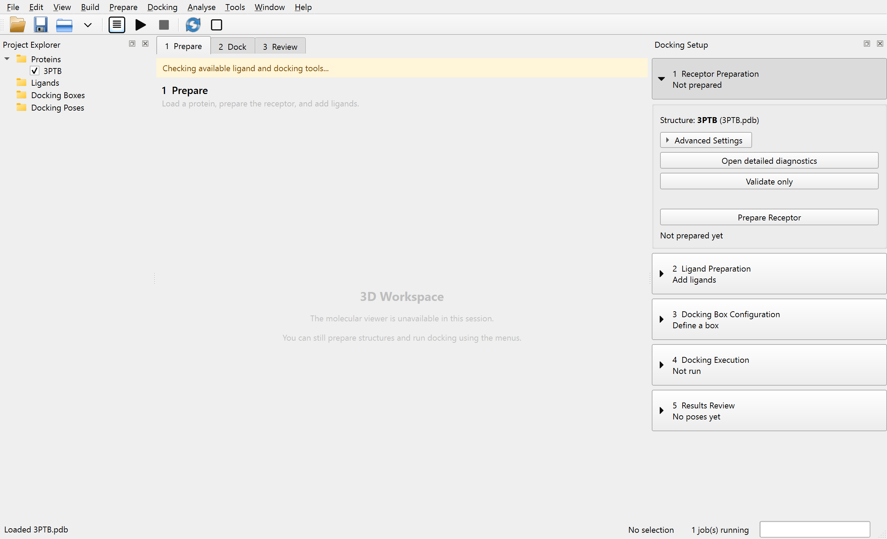
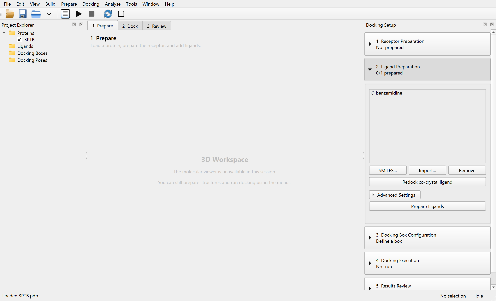
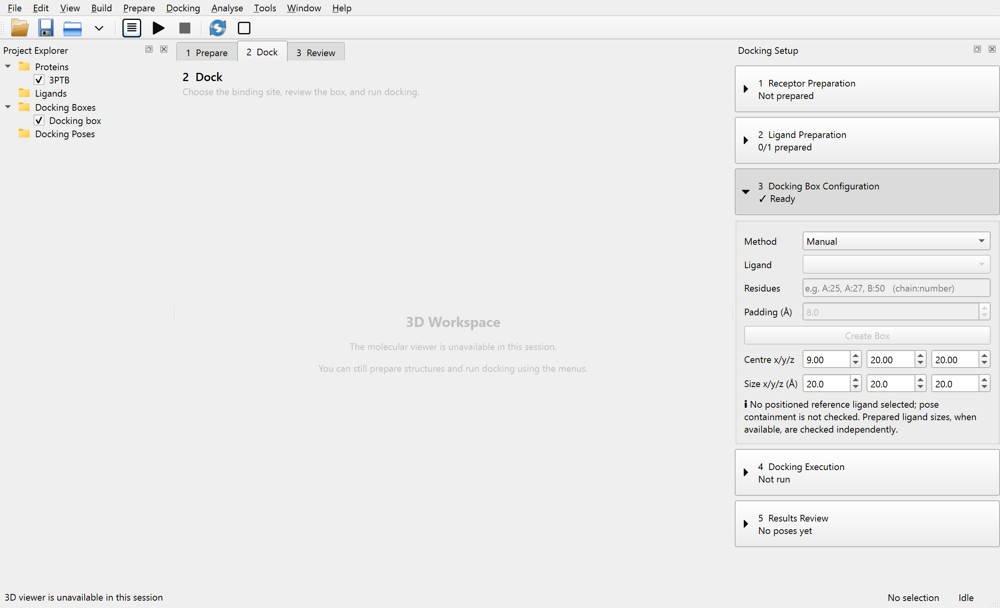
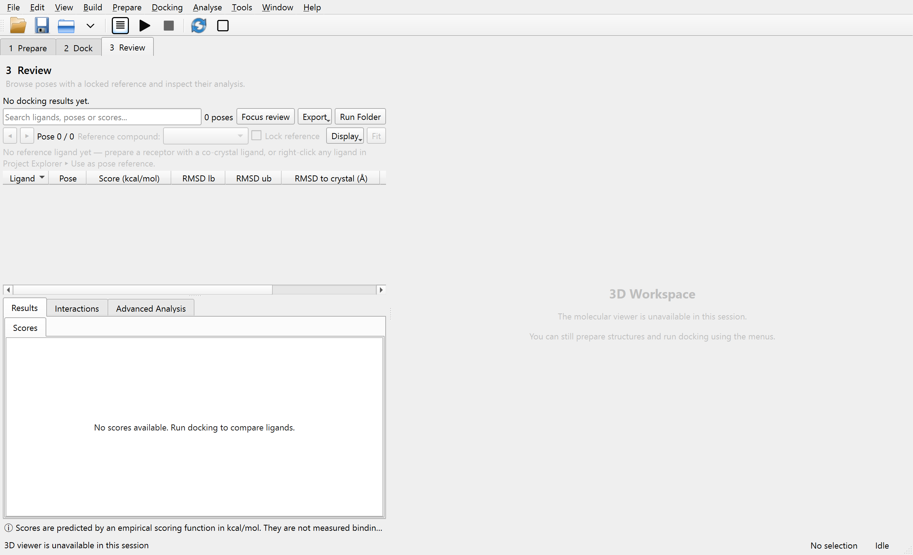

WaweDock User Guide
A clear, step-by-step guide to receptor preparation, ligand preparation, docking, and pose review.
Quick start
- Create or open a project.
- Load a PDB or mmCIF protein.
- Prepare the receptor.
- Add and prepare ligands.
- Create a docking box.
- Run docking and review poses.
Understand the main window

Three workspaces
| Workspace | Purpose |
|---|---|
| 1 Prepare | Load and prepare proteins and ligands. |
| 2 Dock | Set the binding site and docking parameters. |
| 3 Review | Browse poses, scores, contacts, and interactions. |
Open additional panels with Window > Panels, including Properties, Selection & Cleanup, Prepare Receptor — Diagnostics, Preparation Report, Log, and Jobs.
Load a protein
- Select File > Open Structure, or drag a PDB/mmCIF file into the window.
- For an online structure, select File > Fetch from PDB and enter a PDB ID such as
3PTB. - Confirm that the protein appears under Proteins in Project Explorer.
The imported structure remains the editable source structure. Choose Edit > Show Editable Structure when you need to select or edit it.

Prepare the receptor
In Docking Setup, expand 1 Receptor Preparation.
- Optionally enter chains such as
A,B. Leave the field blank to use all chains. - Keep Keep metal ions selected unless you have a reason to remove them.
- Enable Retain binding-site waters only when nearby crystallographic waters are relevant.
- Set protonation pH. The default is 7.4.
- Click Validate only to inspect issues without changing the structure.
- Click Prepare Receptor.
Add and prepare ligands
Expand 2 Ligand Preparation.
Option A: Enter a SMILES string
- Click SMILES.
- Enter a SMILES string followed by an optional ligand name.
Option B: Import ligand files
- Click Import.
- Select SDF, MOL, MOL2, SMILES, CSV, or TXT ligand files.
Open Advanced Settings to choose ionisation handling, input conformers, and the random seed. Then click Prepare Ligands.

Create the docking box
Switch to 2 Dock, or expand 3 Docking Box Configuration.
| Method | Use it when... |
|---|---|
| Co-crystal ligand | An extracted known ligand identifies the binding site. |
| Selected residues | You know the pocket residues. |
| Whole protein | You are running blind docking. |
| Manual | You have exact centre and size values. |
- Select a method.
- For a ligand or residue pocket, set padding.
- Click Create Box.
- Confirm the box appears and has no red validation errors.

Run docking
Expand 4 Docking Execution.
- Review the receptor, ligand, and box readiness message.
- Set exhaustiveness and the number of poses.
- Adjust advanced CPU or seed settings if needed.
- Click Run Docking, or press F5.
Use Cancel to stop an active run. Open Jobs for progress and Log for job details.
Review poses and results
Select 3 Review. Click a pose row to display that pose in the 3D viewer.

Review controls
- Search — find a ligand or pose.
- Display — hide the protein or keep a reference visible.
- Fit — fit the current view.
- Export — save CSV, Excel, SDF, or HTML metrics.
View, measure, and edit
Viewer
- View > Reset Camera fits the structure.
- View > Label Protein Residues toggles residue labels.
- View > Measure measures a distance, angle, or dihedral.
- View > Full Screen hides panels; press Escape to restore.
- File > Export Image saves a high-resolution PNG.
Selection and editing
Use left-click for a residue or water, Shift/Ctrl-click for multiple items, Alt-drag for a lasso, and double-click for a complete component. Open Selection & Cleanup for atom, residue, chain, and component operations.
Prepared receptors and docking poses remain read-only. Source structure edits use Edit > Undo Structure Edit and Edit > Redo Structure Edit.
Projects and layouts
Projects
- File > Save Project saves the current project.
- File > Save Project As (copy) creates a copy.
- File > Archive Project (zip) creates a portable archive.
- File > Open Project reopens a project folder.
Layouts
Use Window > Save Layout As, Restore Layout, or Reset Layout. Panels can be moved, resized, closed, or detached.
Troubleshooting
| Problem | Check |
|---|---|
| Ligand or receptor controls are disabled | Read the top notice and confirm the Full edition and chemistry backend are available. |
| Run Docking is disabled | Prepare the receptor and ligands, create a valid box, and resolve box errors. |
| Receptor preparation fails | Open Preparation Report and Log. Confirm that chains and the PDB/mmCIF file are valid. |
| Ligand preparation fails | Check the SMILES or ligand file, stereochemistry, and input protonation. |
| Viewer is blank | Try View > Reset Camera. For startup problems, run the startup check. |
.\.venv\Scripts\python.exe -m mds --startup-check
Scientific interpretation
Docking scores are empirical predictions in kcal/mol. They are not experimentally measured affinities and are not evidence of biological activity. Contact and interaction diagrams are calculated candidates, not experimental observations.
Protonation, tautomer choice, receptor repair, water handling, and binding-site selection affect results. Validate important findings using appropriate experimental or independent computational methods.